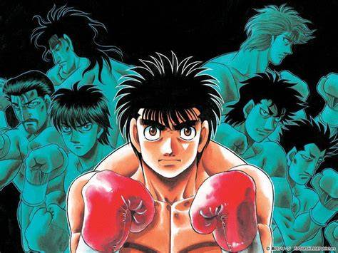

Ippo's Last Resort
by Aaron
Ippo's Last Resort
Chapter 1
The lights shine brightly above the boxing ring as Ippo Makunouchi prepares for another exhausting battle. Known for his powerful punches and relentless pressure, Ippo has earned the respect of fighters and fans alike. But behind his determination lies a difficult truth: every opponent becomes harder to defeat, and strength alone cannot guarantee victory.
Under the guidance of Coach Kamogawa, Ippo has spent countless hours improving his footwork, endurance, and punching power. His training has taught him to withstand punishment and keep advancing even when his body begs him to stop. However, his next opponent is prepared for his aggressive fighting style and refuses to give him an easy opening.
When every strategy fails and defeat draws closer, Ippo must decide how far he is willing to go.
From the opening bell, the match becomes a brutal test of timing and endurance. Ippo tries to close the distance, but his opponent counters his advances with sharp punches and careful movement. Each attempt to attack costs him valuable energy, while the crowd watches anxiously as the balance of the fight begins to shift.
Ippo remembers the lessons he learned inside the Kamogawa Boxing Gym. Coach Kamogawa always reminds him that a boxer cannot rely on courage alone. He must recognize danger, protect himself, and understand the opponent standing across from him. Yet in the heat of battle, applying those lessons becomes harder than it ever seemed during training.
THE FINAL GAMBLE
As the rounds pass, Ippo realizes that his familiar attacks are no longer enough. His opponent anticipates his movements, blocks his strongest punches, and punishes every careless approach. Exhaustion begins weighing on Ippo's shoulders, but his determination refuses to disappear.
With the match slipping away, Ippo considers using his most dangerous approach: pressing forward with everything he has and creating an opening through sheer persistence. It is a risky decision. If he misjudges the timing, he could walk directly into another counterattack. If he hesitates, however, the opportunity to turn the fight around may vanish.
From his corner, Kamogawa watches closely, searching for the moment when his student can change the course of the battle. Ippo's teammates hold their breath as they witness the struggle. They know how much he has sacrificed to reach this point, but they also understand that determination does not make a boxer invincible.
Ippo steadies his breathing and studies his opponent one more time. Instead of charging forward blindly, he remembers that every fighter has weaknesses. He adjusts his stance, waits for a mistake, and prepares to deliver a decisive combination. The next exchange could determine everything.
When the opening finally appears, Ippo moves forward with all the courage he can gather. His punches thunder through the ring as both fighters struggle to maintain their balance. The crowd erupts, unsure whether they are witnessing a comeback or the final moments of a determined boxer's challenge.
Ippo's last resort is not simply his strongest punch or his willingness to endure pain. It is the courage to keep thinking, adapting, and fighting when the easy answers disappear. Whatever the result, the battle reminds him that true strength comes from more than the ability to take a hit. It comes from learning when to stand firm, when to change direction, and when to risk everything for the chance to rise again.